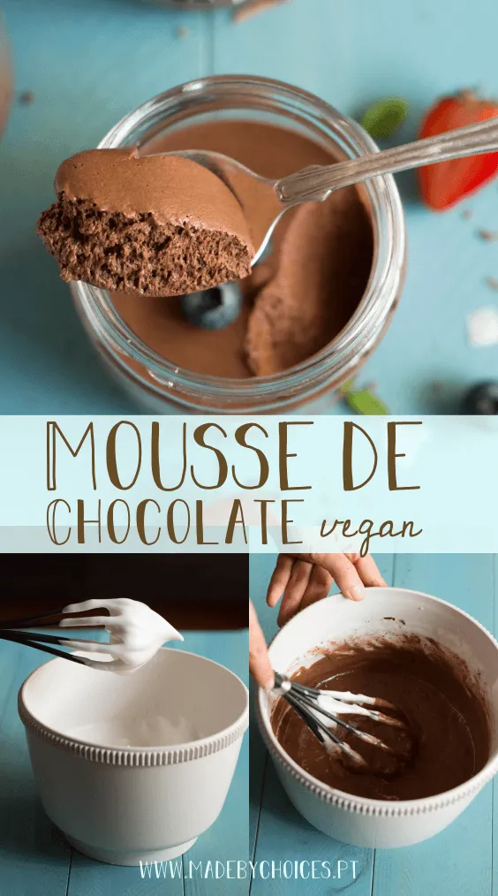

Mousse de Chocolate Vegan
Hoje a sugestão é doce, com chocolate e é um clássico, mas numa versão 100% vegetal ou vegan.
- Começar por cortar o chocolate em pedaços mais pequenos e derreter lentamente em banho-maria.
- nquanto o chocolate derrete vamos bater a aquafaba numa batedeira, ou na bimby com o acessório borboleta (usei água de cozer o grão em casa. Se usar de lata tenha atenção à quantidade de sódio presente).
- Bater a aquafaba até virar “claras em castelo”. O tempo pode variar com a potência da batedeira, normalmente consigo obter o ponto em 5 minutos. O ponto ideal é quando a aquafaba fica bem firme e não cai da colher (ponto merengue).
- Quando o chocolate estiver derretido juntar ¼ de aquafaba batida e envolver muito bem no chocolate (isto permite arrefecer um pouco o chocolate e não ganhar grumos).
- Transferir todo o chocolate para a taça onde esta a aquafaba e envolver tudo muito bem de forma gradual, até estar homogéneo.
- Transferir para taças individuais.
- Levar ao frigorífico por pelo menos 4 horas.
- Devorar!
Mais sugestões de receitas em: